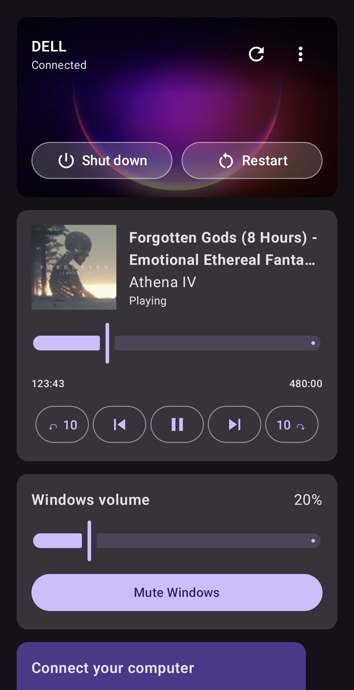
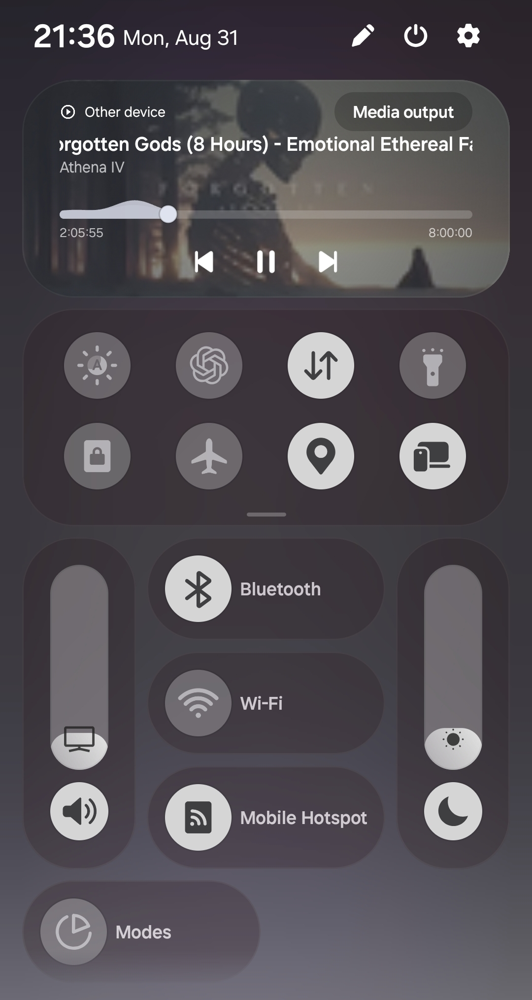
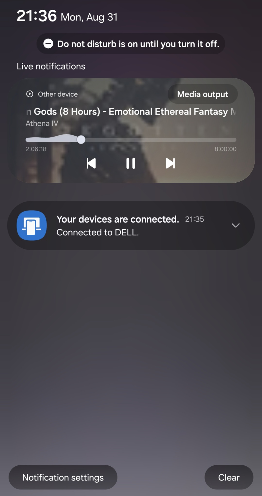

Install the Windows Agent
Install Deskora Agent on the computer you want to control. On first launch it shows a six-digit code.
Windows + Android
Deskora turns your Android phone into a calm, private remote for the Windows PC already in your room.

Three small steps
Both devices stay on the same Wi-Fi. The agent shows a code; the phone uses it to pair.
Install Deskora Agent on the computer you want to control. On first launch it shows a six-digit code.
Open the app on your phone. The current Android package is a test build until the Google Play release.
Enter the code while both devices share Wi-Fi. Deskora remembers the protected pairing afterwards.
Built for the everyday
Play, pause, skip, seek and see the artwork from your Windows media session.
Adjust the computer volume or mute it without reaching for the keyboard.
See the current wallpaper, connection state and power controls in one card.
Keep a one-tap Deskora control beside Wi-Fi and Bluetooth, even after Android hides the media card.
Deskora connects your phone and PC over the same Wi-Fi with a six-digit pairing code.
Familiar, but yours
The full remote lives in Deskora. When media is playing, the usual Android media controls stay available from the notification shade too.


First public test
Install the agent first, then the Android test build. The Android package is not yet distributed by Google Play, so Android will ask for your approval to install it.